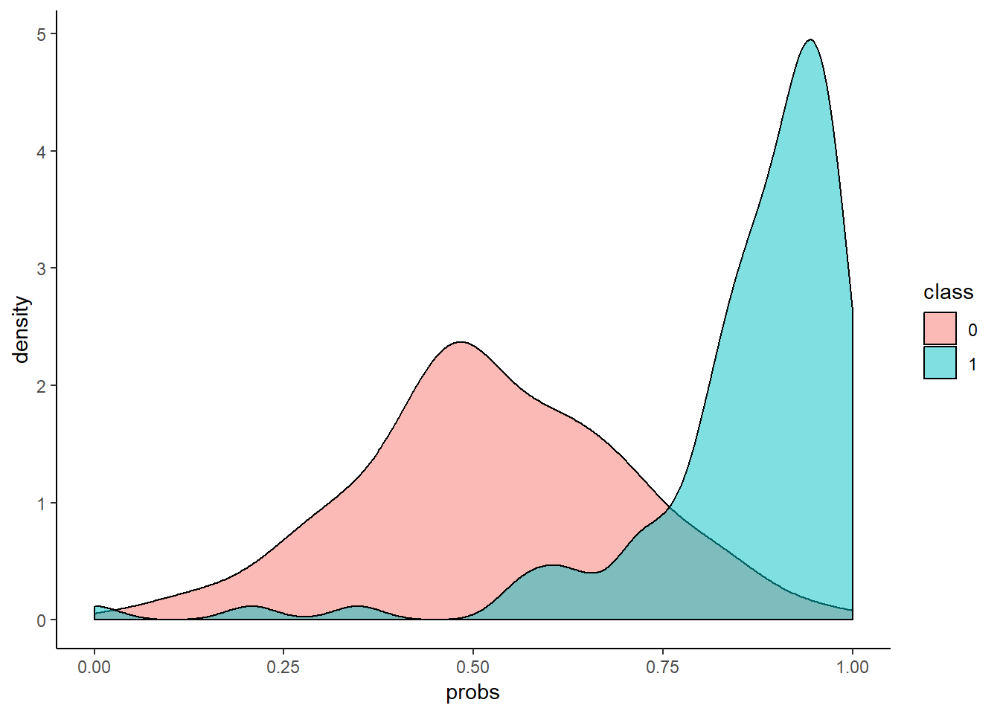
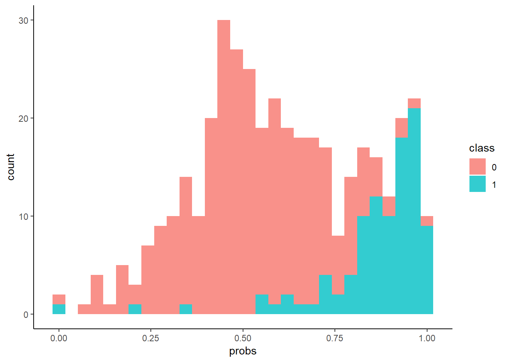

Matrice de confusion
1 Introduction
- Précision et rappel… précision, ça se comprend bien en français. Mais rappel. Comment on peut se rappeler de la signification du rappel?
- Imagine que tu appelles des gens, s’ils rappellent, c’est que ce sont les bonnes personnes.
- Ah oui, pas mal.
- Et c’est la même chose que la sensibilité, qui forme un couple avec la spécificité…
- Donc ceux qui rappellent sont donc sensibles.
- …
- Bon au moins, c’est cohérent avec les termes anglais: precision and recall.
- Mais attention, accuracy c’est pas pareil que precision, mais on français, on peut aussi traduire par précision. Mais pour distinguer les deux, on dit plutôt justesse.
- … C’est vraiment une matrice de confusion.
- Alors, on va tenter de donner quelques précisions.
2 La matrice
2.1 Analyse globale
Dans cette table croisée à double entrée, on doit avoir les valeurs réelles (en colonne) et les valeurs prédictives (en ligne).
| Valeur réelle positive | Valeur réelle négative | |
|---|---|---|
| Prédiction positive | VP (vrais positifs) | FP (faux positifs) |
| Prédiction négative | FN (faux négatifs) | VN (vrais négatifs) |
Ainsi, on a quatre valeurs dont la signification est assez claire.
2.2 Domaines d’utilisation
En pratique, cette matrice est utilisée dans plusieurs domaines:
- Diagnostic médical
- Recherche d’information (information retrieval)
- Classification binaire (machine learning)
3 Cas classiques
3.1 Faible taux d’erreurs
- Définir la mesure de performance avec un seul nombre: taux d’erreurs
- Exemple, imaginons qu’on vous dit qu’il y a construit un modèle avec un taux d’erreurs de 8%. Doit-on présumer que ce soit a priori un bon modèle ?
- Et s’il vous donne la matrice de confusion suivante ? Que dire ?
| Valeur réelle positive | Valeur réelle négative | |
|---|---|---|
| Prédiction positive | 3 | 1 |
| Prédiction négative | 7 | 89 |
3.2 Surdiagnostic
Oubli de la fréquence de base
- Hypothèses
- Test d’une maladie au sein d’une population de 1000 personnes avec 0 faux négatif
- Test avec une spécificité du test de 5%
Impacts de la population infectée
- Population infectée : 40%
- 400 personnes infectées avec un test positif
- 30 personnes faux positifs (600 x 5%)
- La probabilité d’être infecté un test positif : 93%
- Population infectée : 2%
- 20 personnes infectée avec un test positif
- 49 personnes faux positifs (980 x 5%)
- La probabilité d’être infecté un test positif : 29%
4 Les taux
4.1 Les dénominateurs
Quand on calcule un taux, on a un numérateur et un dénominateur.
Dans la matrice de confusion:
- Quand les dénominateurs sont le nombre de classes réelles, on va parler de taux de vrais positifs ou de taux vrais négatifs.
- Quand les dénominateurs sont le nombre de prédictions faites, on va parler de valeur prédictive (positive ou négative).
| Valeur réelle positive | Valeur réelle négative | |||
|---|---|---|---|---|
| Prédiction positive | VP (vrai positif) | FP (faux positif) | VP/(VP+FP) | FP/(VP+FP) |
| Prédiction négative | FN (faux négatif) | VN (faux négatif) | FN/(FN+VN) | VN/(FN+VN) |
| VP/P (taux de VP) | FP/N (taux de FP) | |||
| FN/P (taux de FN) | VN/N (taux de VN) |
4.2 Taux de vrai positifs
En anglais, c’est le TPR (true positive rate). Autres noms:
- Dans le diagnostic médical, on parle de sensibilité (sensitivity)
- Dans le domaine de Information retrieval, on parle de rappel (recall ou hit rate)
\[\mathrm{TPR} = \frac {\mathrm{TP}} {P} = \frac {\mathrm{TP}} {\mathrm{TP}+\mathrm{FN}}\]
Taux de faux négatifs
- en anglais FNR (false negative rate)
- miss rate
- taux d’erreur de type II
\[\mathrm{FNR} = \frac {\mathrm{FN}} {P} = \frac {\mathrm{FN}} {\mathrm{FN} + \mathrm{TP}} = 1 - \mathrm{TPR} \]
4.3 Taux de vrai négatif
- en anglais true negative rate (TNR)
- Dans un diagnostic médical, on parle de spécificité (specificity ou selectivity)
\[\mathrm{TNR} = \frac {\mathrm{TN}} {N} = \frac {\mathrm{TN}} {\mathrm{TN} + \mathrm{FP}} = 1 - \mathrm{FPR}\]
Taux de faux positifs
- en anglais: false positive rate (FPR)
- taux d’erreurs de type I ou taux d’erreurs de première espèce
- recherche d’information: fall-out
\[\mathrm{FPR} = \frac {\mathrm{FP}} {N} = \frac {\mathrm{FP}} {\mathrm{FP} + \mathrm{TN}} = 1 - \mathrm{TNR}\]
4.4 Valeur prédictive positive
- PPV: positive predictive value
- Précision
\[\mathrm{PPV} = \frac {\mathrm{TP}} {\mathrm{TP} + \mathrm{FP}}\]
Taux de fausses découvertes
On a donc le complémentaire pour la prédiction positive correcte, qui est la prédiction positive fausse.
- FDR: false discovery rate
\[\mathrm{FDR} = \frac {\mathrm{FP}} {\mathrm{FP} + \mathrm{TP}} = 1 - \mathrm{PPV} \]
4.5 Valeur prédictive négative
- NPV: negative predictive value
\[\mathrm{NPV} = \frac {\mathrm{TN}} {\mathrm{TN} + \mathrm{FN}}\]
Taux de fausses omissions
- FOR: false omission rate
\[\mathrm{FOR} = \frac {\mathrm{FN}} {\mathrm{FN} + \mathrm{TN}} = 1 - \mathrm{NPV} \]
4.6 Justesse ou précision totale
- ACC: accuracy
\[\mathrm{ACC} = \frac {\mathrm{TP} + \mathrm{TN}} {P + N} = \frac {\mathrm{TP} + \mathrm{TN}} {\mathrm{TP} + \mathrm{TN} + \mathrm{FP} + \mathrm{FN}} \]
Taux d’erreurs
On peut sans doute du taux d’erreur, qui serait \(1-ACC\)
5 Les couples de taux
5.1 Précision et rappel
| Valeur réelle positive | Valeur réelle négative | ||
|---|---|---|---|
| Prédiction positive | VP (vrai positif) | FP (faux positif) | Précision |
| Prédiction négative | FN (faux négatif) | VN (faux négatif) | |
| Rappel |
5.2 Sensibilité et spécificité
| Valeur réelle positive | Valeur réelle négative | |
|---|---|---|
| Prédiction positive | VP (vrai positif) | FP (faux positif) |
| Prédiction négative | FN (faux négatif) | VN (faux négatif) |
| Sensibilité | ||
| Spécificité |
6 Les taux combinés
6.1 Score F1
Moyenne harmonique de précision et rappel
\[F_1 = 2 \cdot \frac {\mathrm{PPV} \cdot \mathrm{TPR}} {\mathrm{PPV} + \mathrm{TPR}} = \frac {2 \mathrm{TP}} {2 \mathrm{TP} + \mathrm{FP} + \mathrm{FN}}\]
6.2 Coefficient de corrélation de Matthews
MCC: Matthews correlation coefficient
\[ \mathrm{MCC} = \frac{ \mathrm{TP} \times \mathrm{TN} - \mathrm{FP} \times \mathrm{FN} } {\sqrt{ (\mathrm{TP}+\mathrm{FP}) ( \mathrm{TP} + \mathrm{FN} ) ( \mathrm{TN} + \mathrm{FP} ) ( \mathrm{TN} + \mathrm{FN} ) } }\]
6.3 Informedness
- Bookmaker Informedness (BM)
\[ \mathrm{BM} = \mathrm{TPR} + \mathrm{TNR} - 1\]
6.4 Markedness (MK)
\[ \mathrm{MK} = \mathrm{PPV} + \mathrm{NPV} - 1\]
7 La super matrice

8 Courbe ROC
8.1 Prédiction en probabilité
- Prédiction en terme de probabilité
- Seuil habituel: 0,5
- Graphique pour les densités

Source: http://www.navan.name/roc/
Identifier les taux suivants
- Taux de faux positfs
- Taux de vrais positifs
- Taux de faux négatifs
- Taux de vrais négatifs
En pratique, on a plutôt des courbes de densités qui n’ont pas une forme normale.


8.2 Construction de la courbe
- En faisant varier le seuil
- Calculer la matrice de confusion
- Taux de VP en fonction du taux de FP

8.3 AUC
Aire sous la courbe
Commentaires
- Insensible aux probabilités (en valeur absolue)
- Uniquement l’ordre des probabilités (valeur relative est importante)
- Pour le nombre de classes supérieur à 2, utiliser “one versus all”
- Seuil à déterminer en fonction du critère business
- Si le seuil est bas, on peut détecter “tous” les positifs donc le taux de VP est élevé. Mais le taux de FP aussi (donc fausse prédiction postive, en réalité, négatif).
- Si le seuil est haut, tout ce qu’on détecte est VP, mais on détecte pas un grand nombre.
9 Conclusion
- Grâce à la matrice de confusion, le data scientist est quand même moins confus devant les confusions du modèle.
- Voilà, maintenant tu sais tout.
- Let’s ROC and roll
- Attens attends, pour être sûr que tu as tout compris, voici quelques questions.
10 Test de connaissance
- Si on augmente le seuil de classification, comment la précision et le rappel évoluent ?
- Si on vous dit que l’AUC de son modèle est de 0,2. C’est bien ou pas ?
- Si on multiplie les probabilités de prédiction par 2, comment l’AUC évolue ?
11 Source
Bon OK, tu as compris, tout est sur wikipeia !
Site internet de Kezhan SHI